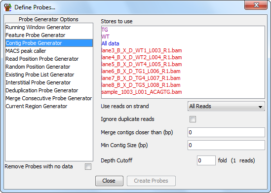

The contig probe generator is useful where you have clumps of data spread over your genome. It designs probes over contiguous stretches where reads are enriched.

There are four options you can set for the contig generator.
You can also choose to limit the anlaysis to only a certain subset of read strands, and for the reads you use you can choose to build clusters separately for different strands. When separating the different strands the enrichment level you use is based on the total number of reads and is not recalculated for each strand, so a common threshold is always used in all cases.
For the purpose of the analysis the probes from all of the selected stores are merged. Generally, if you want to compare two datasets then you would combine them to generate the contigs so you have a common set of regions in which you can make measurements.
Allowing some flexibility in the distance between adjacent contigs is often a good idea. Due to mapping constraints it is easy to get small holes inside a cluster of reads. Adding this flexibility means that a single large cluster won't be split into many smaller clusters.
The minimum size cutoff can be useful to remove very short contigs which often contain only a single read, or a set of reads which map to exactly the same point.
Choosing a suitable enrichment factor is not an exact science and will depend on the nature of your data. You can choose whatever fold enrichment you like, but the actual analysis will reduce this to an integer number of reads (shown in brackets), since in real data the degree of overlap will always be an integer. Setting this value higher will result in more specific areas of enrichment being found, but may fragment larger enriched regions. Setting this lower will find more enriched regions, but at the expense of these being identified less exactly.